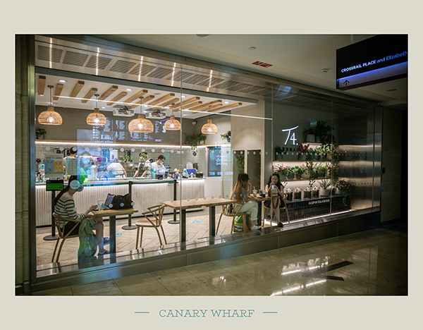
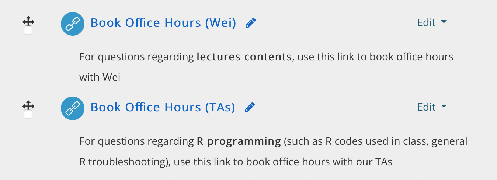
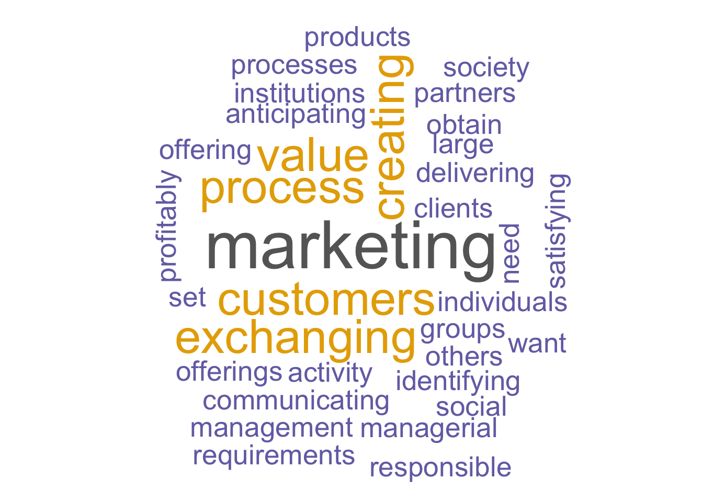
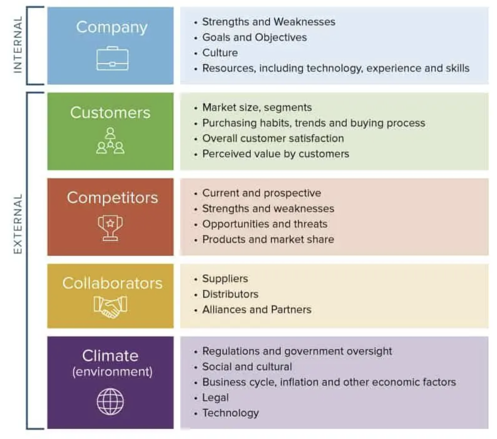
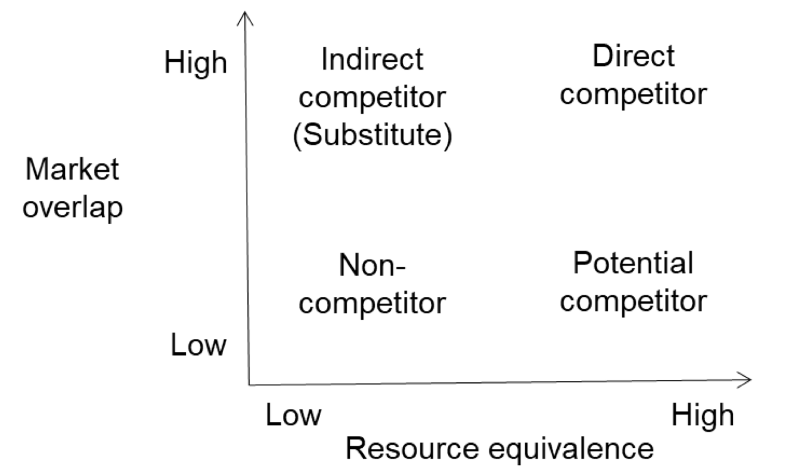
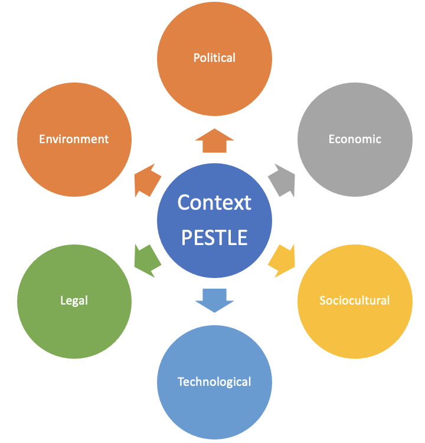
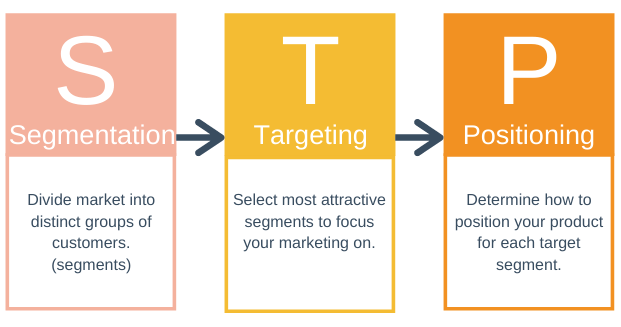
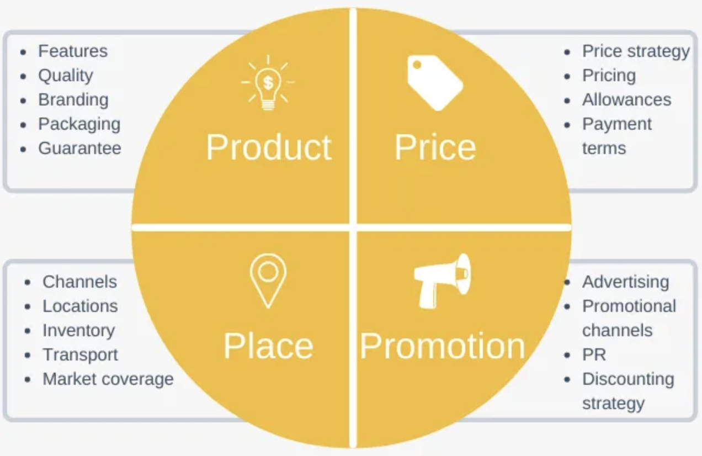
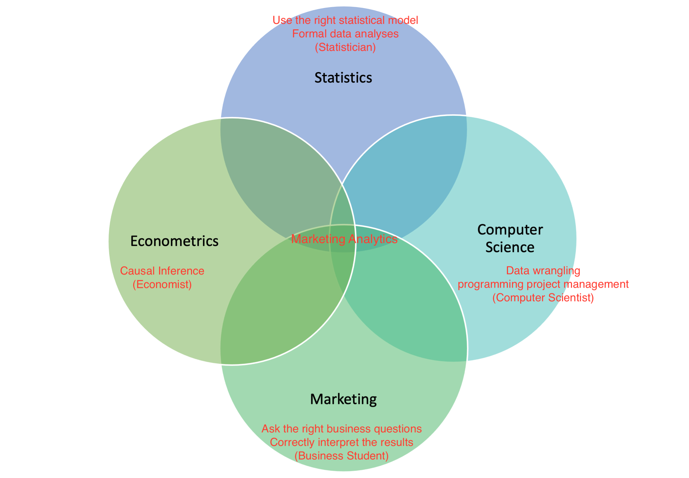

Class 1 Introduction to Course and Marketing Process
1 Module Overview
1.1 About Me
Name: Wei MIAO
Education: PhD in Quantitative Marketing (NUS, Singapore)
Hobbies: musical instruments; foodie; video games; traveling
1.2 Research and Industrial Collaboration
My current research focuses on digital marketing, sharing economy, platform economics.
My industrial collaborations include:
- Sharing economy and ride-sharing (Uber, Shouqi, ComfortDelgro)
- Demand forecasting (predictive analytics; Week 4)
- Evaluating the impact of COVID-19 on business activities (instrumental variable, Week 8)
- Surge pricing design (k-means clustering, Diff-in-Diff, causal forest; Weeks 3, 9, and 10)
- Platform businesses (Alibaba, Weibo, etc.)
- Landing page design (A/B testing; Week 5)
- Disintermediation and cold-start problems (field experiment; Week 5)
1.3 Weekly Arrangements
- Detailed weekly arrangements are in this link
- You can add bookmark for easier reference; also under Moodle’s “
Module Overview” section.
- You can add bookmark for easier reference; also under Moodle’s “
- Each week, we have a 3-hour lecture on Thursday, usually divided into two sessions
- A methodology session, in which we cover a new marketing analytics model/tool
- A case study workshop session, to practice the tools learned in the previous week
- All classes will be recorded, which will be released next day.
- The videos are at the end of the Moodle page under “
LectureCast Recordings” section.
- The videos are at the end of the Moodle page under “
1.4 Textbook
- We will not rely on any specific textbook in this module.
- “Handbook of Marketing Analytics”. This book is free for download at UCL’s E-library.
- “Introduction to Econometrics with R”, which is a good textbook for learning econometrics with R.
- All classes will be based on the lecture notes and supplementary readings I have prepared for you.
1.5 Lecture Notes and How to Prepare
- I’m updating my Lecture notes every year to keep up with the latest development in marketing analytics. So lecture notes will be released each week before the Thursday lecture (I will aim for Tuesday).
- PDF version includes the slides you see now
- html version additionally includes the solution R codes for in-class questions
- For each class, there may be pre-class preparation needed
- If so, materials will be pre-posted under each week’s Moodle section with instructions
- These are mandatory, usually involves reading case studies necessary for class discussion
- There are also supplementary after-class reading/exercise to further enhance your understanding
1.6 Module Communications and Any Questions
We will use MS Teams for communications of this module. Please use the code to join the MS Team now.
Make sure you hit “Change Notifications => All Activities” for all channels, especially the General Channel where important module announcements will be made.
For any questions you have, please post them in the corresponding Teams channel first, so that everyone can see the question.
- We have separate channels for assignments, lectures, and R programming questions (and a chit chat channel).
The teaching team will monitor the channel and answer them. I will discuss important common questions in the next class.
1.7 Still Have Questions? Use Office Hours
Office hour sessions will be hosted on MS Teams each Tuesday and Friday.
The links to book office hours are below (also under Moodle’s “
Module Overview” Section for easier access)

1.8 About R Programming
Please bring your laptops in all classes. There will be R exercises in class every week.
It’s totally normal to feel overwhelmed in the first few weeks from learning R.
If you run into any problems with R
- “Common R Programming Errors Faced by Beginners”; I will constantly update this page based on your questions, so this should be the first place to look for an answer
- Google is always your best place to seek answers for most debugging issues
- Office hours with TAs
1.9 Classroom Etiquette
- Class participation
- Please remember to bring you name tags. Please let me know how to pronounce your name correctly.
- Attendance
- School will track your attendance per university policy
- Please email me if you couldn’t attend a class
1.10 Assignments
No exams; 3 individual assignments, which are similar to case studies, and you will need to use what you learned in class to solve real-life marketing analytics problems.
- First assignment, 30% weight, 1500 words, due on Oct 29
- Second assignment, 40% weight, 2000 words, due on Nov 26
- Third assignment, 30% weight, 1500 words, due on Dec 17
What to submit
- PDF report rendered from R Quarto; don’t submit any other file format.
- The quarto-based answer sheets (qmd file) will be given to you
Word count and late submission penalties will be applied by BA admin. For related queries and EC applications, please directly contact BA admin.
Your marks will be released no later than 4 weeks after the submission date per school requirement.
We have random second marking in place to mitigate marking errors. So please refrain from emailing teaching assistants for any re-marking as this is not allowed by school.
1.11 10-week Contract between Us
- I promise
- I will teach you the “science” part of marketing including the state-of-the-art marketing analytics tools
- You will be in a position to intelligently manage and benefit from marketing analytics people (without turning you into a statistician)
- Give you a way of thinking about how to use data analytics tools to solve business problems in the future, not just marketing, not just today
- Accessible when you need help
- You promise
- Duly prepared for each class
- Attend classes regularly
2 Marketing Process
2.1 Role of Marketing in a Modern Company
- Finance (finance a company’s business activities)
- Accounting (bookkeeping of transactions)
- Operations (supply chain, manufacturing, inventory management)
- Marketing (directly deal with consumer; value exchange and realization)
2.2 What is Marketing?
Kotler (1991): “Marketing is a social and managerial process by which individuals and groups obtain what they want and need through creating, offering and exchanging products of value with others.”
British Chartered Institute of Marketing (2000s): “Marketing is the management process responsible for identifying, anticipating and satisfying customers’ requirements profitably.”
American Marketing Association (2017): “Marketing is the activity, set of institutions, and processes for creating, communicating, delivering, and exchanging offerings that have value for customers, clients, partners, and society at large.”
2.3 What is Marketing? A Word Cloud Approach

install.packages('pacman')
pacman::p_load(tm, wordcloud, RColorBrewer,
wordcloud2, data.table)
# generate text corpus
df_mkt <- 'Marketing is a social and
managerial process by which individuals and groups
obtain what they want and need through creating,
offering and exchanging products of value with others.
Marketing is the management process responsible for
identifying, anticipating and satisfying customers
requirements profitably.
Marketing is the activity, set of institutions,
and processes for creating, communicating, delivering,
and exchanging offerings that have value for customers,
clients, partners, and society at large.'
df_mkt_corpus <- Corpus(VectorSource(df_mkt))
df_mkt_corpus <- df_mkt_corpus |>
tm_map(removePunctuation) |>
tm_map(stripWhitespace) |>
tm_map(content_transformer(tolower)) |>
tm_map(removeWords, stopwords("english"))
# Create a document-term-matrix
df_mkt_dtm <- TermDocumentMatrix(df_mkt_corpus)
df_mkt_matrix <- as.matrix(df_mkt_dtm)
df <- data.table(words = rownames(df_mkt_matrix),
freq = df_mkt_matrix[,1])
# draw wordcloud
set.seed(888)
wordcloud(words = df$words, freq = df$freq,
min.freq = 1, max.words=200, random.order=FALSE,
colors=brewer.pal(8, "Dark2"))Marketing is a management process that creates and exchanges value for the company by selling the right product to the right customer. - Wei, 2022
2.4 Marketing Process

- We will go through the above concepts quickly in the case of Uber. We will later have a group discussion for Airbnb.
2.5 Situation Analysis: 5 C’s
- Any marketing decision can benefit from a deep understanding of the players within the market ecosystem—your own company, current and potential customers, collaborators and competitors—and the context they interact within: the 5Cs for short.

2.6 Situation Analysis: Competitors
Managers tend to exhibit a supply-side bias, largely paying attention towards more salient direct (industry) competitors.
Indirect competitors are defined by who your customers consider to satisfy the same goals.
Potential competitors are those who might pose a competitive threat in the future; who possess equivalent resources that would allow them to enter the market

2.7 Situation Analysis: Context/Climate
- Context/Climate analysis is a strategic planning method used to assess major external factors that influence the market ecosystem, and is often referred to as PESTLE analysis.

2.8 Strategy: STP
- Situation analysis is a critical input into marketing strategy design, the sequential application of the processes of segmentation, targeting, and positioning. Marketing strategy is inherently related to the concepts of the business model and business strategy—who you are serving, with what value proposition, and how you do so.

2.9 Tactics: 4P’s
- The marketing mix provides an implementation of your positioning. Segmentation is here applied at the tactical level, to optimally design the marketing mix or 4Ps.

3 Marketing Analytics
3.1 Big Data Era
With the advancement in information and communication technologies (ICTs), data scientists nowadays are equipped with data analytics tools powerful than ever!
Firms now have access to enormously rich information trail of customers
- Demographic profiles (DoB, gender, ethnicity, income)
- Purchase history (recency, frequency, monetary value, spending behavior)
- Online browsing and search history (browsing, click through, add to cart, purchase)
- GPS data from mobile phones for offline store visits
- Social media (location, consumer preference, social network)
3.2 What Data Scientists (Marketers) Can Do with Big Data? STP
Segmentation
Conventionally
Customer value segmentation
Psychographic segmentation
Demographic segmentation
Price sensitivity segmentation
Analytics-empowered way
- Unsupervised-learning such as K-means clustering (week 3)
Targeting
Conventionally
Target specific markets
Target specific segments
Analytics-empowered way
- Personalized targeting (week 4 and 10)
3.3 What Data Scientists (Marketers) Can Do with Big Data? 4Ps
Pricing
Conventionally
Cost-plus pricing
Uniform pricing
Analytics-empowered way
- Marketing mix modeling (week 5)
- Personalized pricing (week 10)
Promotions1
Conventionally
Inaccurate calculation of ROI
Blanket marketing campaigns
Analytics-empowered way
- Correct calculation of ROI via causal inference (week 5 - 9)
- Personalized marketing offers (week 10)
Product
Conventionally
- Customer surveys
Analytics-empowered way
- Conjoint analysis
- NLP tool to text mine user-generated contents
3.4 Challenges to Effectively Conduct Marketing Analytics
- It’s often forgotten that we can consolidate databases from various sources
- People can easily get lost in the ocean of customer data if they do not know how to look for useful information and which analytics tool to use for specific business tasks
- Data analysts often rely too much on secondary data without data acquisition in mind (A-B testings)
- Acting intelligently on customer information requires a good grasping of modeling techniques; problem is: business people are (possibly) bad at statistics, while statisticians are (mostly) bad at business senses.
In this module, you will learn how to tackle these difficulties!
3.5 Unique Position of Marketing Analytics

Footnotes
Half the money I spend on advertising is wasted; the trouble is, I don’t know which half. - John Wanamaker (an American pioneer in marketing, 1838 - 1922)↩︎